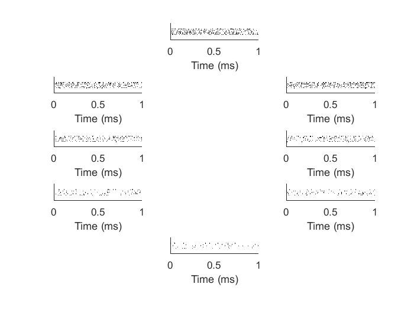
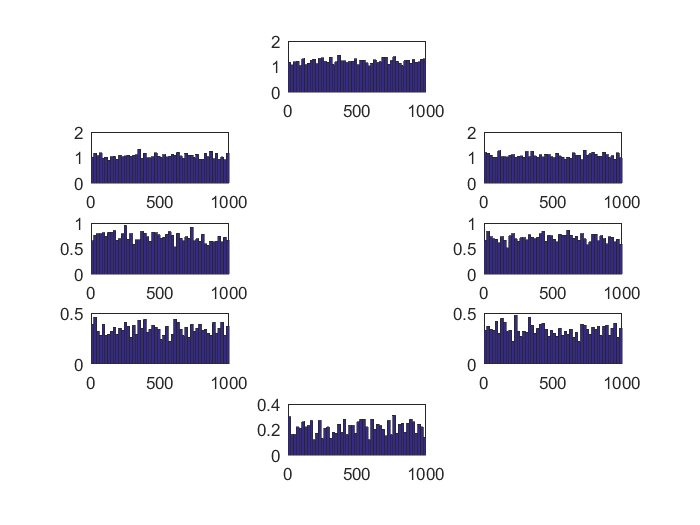
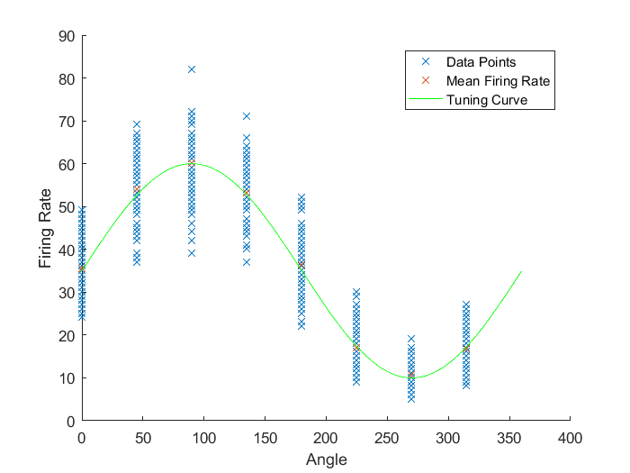
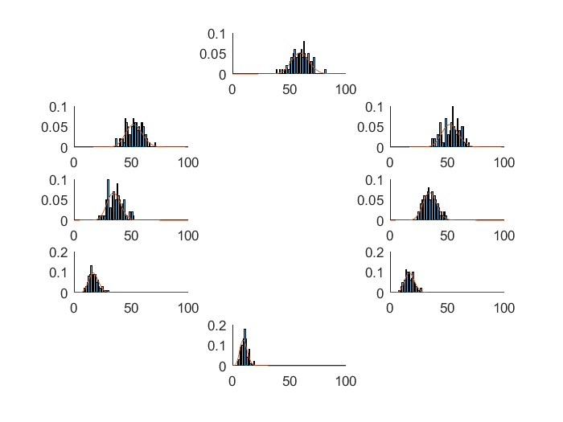
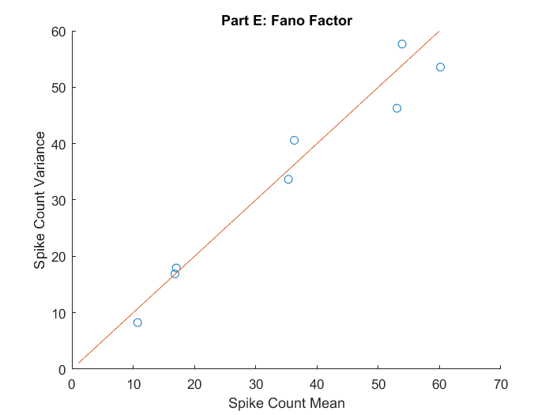
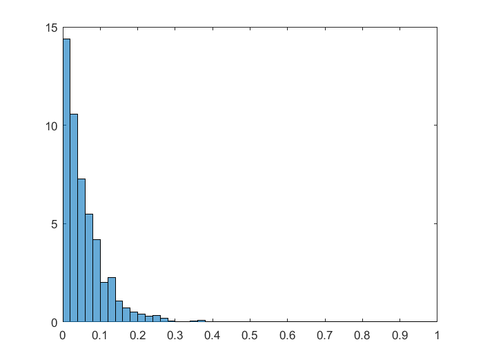
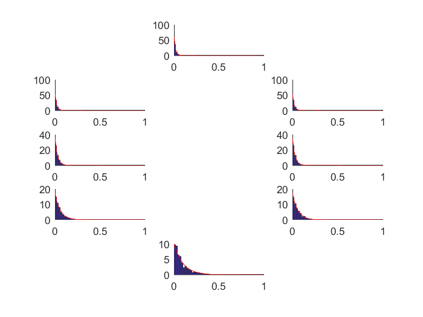
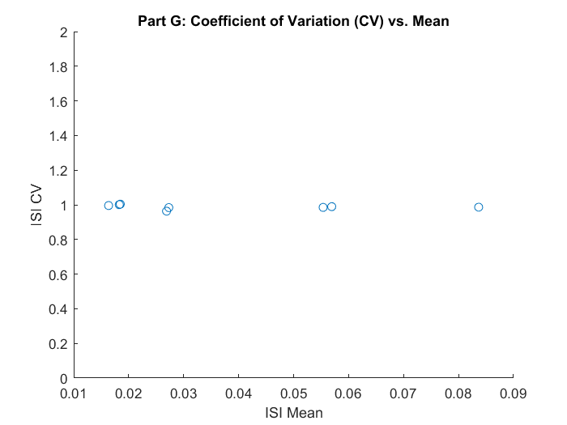

Contents
Problem 2: Homogeneous Poisson Process
clc
clear
close all
Part A: Spike Trains
s = [0 45 90 135 180 225 270 315];
r_0 = 35;
r_max = 60;
s_max = 90;
lambda = r_0 + (r_max - r_0) * cosd(s - s_max);
n = 0;
T = 0;
time = 1;
mu = 1./lambda;
numTrials = 100;
T_cell = {};
T_vec = [];
for i = 1:length(mu)
for k = 1:numTrials
n = 0;
T = 0;
T_vec = [];
while ( T < 1 )
dt = exprnd(mu(i));
T = T + dt;
n = n + 1;
T_vec(n) = T;
end
T_vec = T_vec(:,1:end-1);
T_cell{i,k} = T_vec;
end
end
figure(1)
subplotRaster(T_cell)

Part B: Spike Histogram
bins = 0:0.020:1;
counts_sum = zeros(8,length(bins));
for j=1:length(mu)
for i=1:numTrials
counts = histc(T_cell{j,i}, bins);
counts_sum(j,:) = counts_sum(j,:) + counts;
end
end
figure(2)
counts_sum = counts_sum(:,1:50);
counts_avg = counts_sum/100;
subplotCounts(counts_avg,bins)

Part C: Tuning Curve
f_rate = zeros(1,800);
rate = zeros(8,100);
for i=1:length(mu)
for j=1:numTrials
rate(i,j) = length(T_cell{i,j});
end
end
f_rate = reshape(rate',[1,800]);
s_rep = repmat(s,100,1);
s_rep = reshape(s_rep, 1, numel(s_rep));
figure(3)
title('Part C: Tuning Curve')
scatter(s_rep,f_rate,'x');
f_rate_mean = sum(rate,2)/numTrials;
hold on;
scatter(s,f_rate_mean,'x')
s_2 = 0:360;
lambda_2 = r_0 + (r_max - r_0) * cosd(s_2 - s_max);
plot(s_2,lambda_2,'g')
xlabel('Angle')
ylabel('Firing Rate')
legend('Data Points','Mean Firing Rate','Tuning Curve')
hold off

Part D: Count Distribution
figure(4)
subplotHist(rate, lambda)

Part E: Fano Factor
counts_mean = mean(rate,2);
counts_var = var(rate,1,2);
figure(5)
hold on
scatter(counts_mean, counts_var)
plot(1:max(counts_mean),1:max(counts_mean))
title('Part E: Fano Factor')
xlabel('Spike Count Mean')
ylabel('Spike Count Variance')
hold off

Part F: ISI Distribution
ISI = cell(8,1);
ISI_dist = cell(8,1);
for i = 1:length(mu)
for k = 1:numTrials
ISI{i} = [ISI{i}, diff(T_cell{i,k})];
end
ISI_hist = histogram(ISI{i},bins,'Normalization','pdf');
ISI_dist{i} = ISI_hist.Values;
end
figure(6)
subplotISI(ISI_dist,bins(1:end-1),mu)
 
Part G: Coefficient of Variation
for i = 1:length(mu)
ISI_mean(i) = mean(ISI{i});
ISI_CV(i) = std(ISI{i})/mean(ISI{i});
end
figure(7)
scatter(ISI_mean,ISI_CV)
ylim([0,2])
title('Part G: Coefficient of Variation (CV) vs. Mean')
ylabel('ISI CV')
xlabel('ISI Mean')
